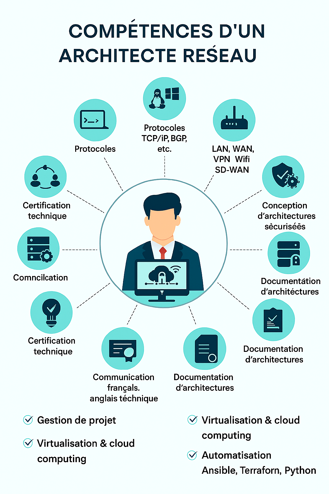

Un architecte réseau doit avoir une excellente maîtrise des protocoles de communication (TCP/IP, BGP, OSPF, MPLS), des technologies réseau (LAN, WAN, VPN, Wifi, SD-WAN), et des systèmes d’exploitation (Linux, Windows Server). Il doit savoir concevoir des architectures sécurisées, intégrer des solutions de cybersécurité (pare-feu, IDS/IPS, chiffrement), et gérer les interconnexions complexes entre équipements et services. Il est expert en virtualisation (VMware, Hyper-V), en cloud computing (AWS, Azure, GCP), et en automatisation via des outils comme Ansible, Terraform ou Python. Il doit aussi être capable de réaliser des audits techniques, rédiger des documents d’architecture, et planifier des projets en tenant compte des contraintes budgétaires et opérationnelles. Des compétences en gestion de projet, communication, anglais technique, et veille technologique sont indispensables pour coordonner les équipes, dialoguer avec les fournisseurs, et anticiper les évolutions du secteur. Enfin, une formation de niveau bac +5 (école d’ingénieurs ou master en réseaux/télécoms) et des certifications comme Cisco CCNP/CCIE, Juniper, ou TOGAF sont fortement recommandées.
